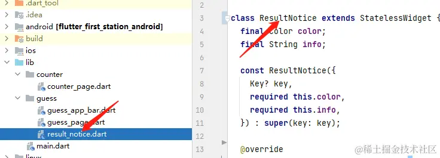
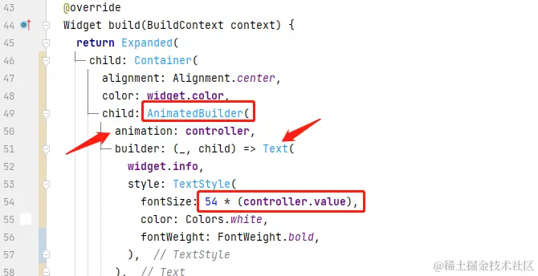
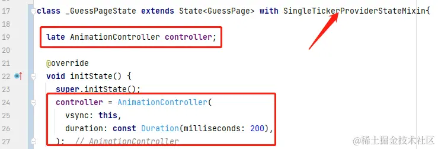
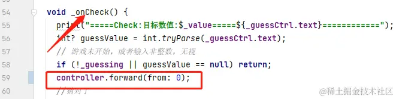

- 01 前言-教程内容导读.md.html
- 02 Flutter 开发环境的搭建.md.html
- 03 新手村基础 Dart 语法 (上).md.html
- 04 新手村基础 Dart 语法 (下).md.html
- 05 Flutter 计数器项目解读.md.html
- 06 猜数字界面交互与需求分析.md.html
- 07 使用组件构建静态界面.md.html
- 08 状态数据与界面更新.md.html
- 09 校验结果与提示信息.md.html
- 10 动画使用与状态周期.md.html
- 11 猜数字整理与总结.md.html
- 12 电子木鱼界面交互与需求分析.md.html
- 13 电子木鱼静态界面构建.md.html
- 14 计数变化与音效播放.md.html
- 15 弹出选项与切换状态.md.html
- 16 用滑动列表展示记录.md.html
- 17 电子木鱼整理与总结.md.html
- 18 白板绘制界面交互与需求分析.md.html
- 19 认识自定义绘制组件.md.html
- 20 通过手势在白板上绘制.md.html
- 21 白板画笔的参数设置.md.html
- 22 撤销功能与画板优化.md.html
- 23 应用界面整合.md.html
- 24 数据的持久化存储.md.html
- 25 网络数据的访问.md.html
- 26 教程总结与展望.md.html
- 捐赠
10 动画使用与状态周期
1. 什么是动画
接下来，我们将进入猜数字项目的最后一个模块：动画的使用。上一节末尾说了，此处使用动画的目的是 增加交互反馈效果 。动画本质上就是不断更新界面展示的内容，玩过翻页动画的感触会深一些:
在每页纸上绘制连续的动作，手快速翻动时，内容快速变化，形成连续运动的动画效果。
这里根据翻页动画，先统一给定几个概念描述，方便后续的表述:
- 动画帧 : 一页纸上的内容。
- 动画时长 : 从开始翻看，到结束的时间差。
- 帧率 : 动画过程中，每秒钟包含动画帧的个数。
- 动画控制动器: 动画进行的动力来源，比如翻页动画中的手。
其实对于界面来说也是类似的，屏幕上展示的内容不断变化，给人视觉上的动画效果。对于界面编程来说，动画一般都是改变某些属性值；比如这里是对中间文字的大小进行动画表现：
| 标题 | ||
|---|---|---|
我们之前将提示信息的界面封装成 ResultNotice 组件进行展示，现在想要修改面板的展示效果，只要对该组件进行优化即可。可以很快定位到 result_notice.dart, 这也是各司其职的一个好处。下面就来看一下，让文字进行动画变化的流程。

2. 动画控制器的创建
要进行动画，首先要找到 驱动力， 也就是翻页的那只手怎么得到。Flutter 框架层对这只手 (Ticker) 进行了封装，给出一个更易用的 AnimationController 类型。想创该类型对象需要两步：
- 1. 一般在
State派生类中创建AnimationController对象，使用这里将ResultNotice改为继承自StatefulWidget：
class ResultNotice extends StatefulWidget {
final Color color;
final String info;
const ResultNotice({
Key? key,
required this.color,
required this.info,
}) : super(key: key);
@override
State<ResultNotice> createState() => _ResultNoticeState();
}
class _ResultNoticeState extends State<ResultNotice>{
//...
}
- 1. 将状态类通过
with关键字混入SingleTickerProviderStateMixin, 让状态类拥有创建 Ticker 的能力。这样在AnimationController构造方法中vsync入参就可以传入当前状态类。 对于新手来说，这可能比较难理解，可以先记成固定的流程。不用太纠结，以后有能力时，可以在动画小册中探索更深层的原理。
class _ResultNoticeState extends State<ResultNotice> with SingleTickerProviderStateMixin{
late AnimationController controller;
@override
void initState() {
super.initState();
controller = AnimationController(
vsync: this,
duration: const Duration(milliseconds: 200),
);
}
这样动画控制器对象就在创建完毕了，在创建对象时 duration 入参用于控制动画时长。默认情况下，动画控制器的值会在指定时长内，从 0 匀速变化到 1 。 下面来看一下如何通过动画控制器，来驱动字号大小的变化。
3. 动画构造器 AnimatedBuilder 的使用
动画本身就决定它需要频繁地变化，但很多时候我们只需要局部一小部分进行动画，比如这里只针对于文字。对于这种频繁变化的场景，最好尽可能小地进行重新构建。这里推荐新手使用 AnimatedBuilder 组件，可以非常方便地处理局部组件的动画变化。 由于需要动画的只是文字，所步骤如下：
- 将
AnimatedBuilder套在Text组件之上。 - 将动画控制器作为
animation入参。 - 将需要动画变化的属性值，根据
animation.value进行计算即可。

刚才说过，默认情况下，动画控制器启动之后，它的值会在指定时长内，从 0 匀速变化到 1。所以，这里 fontSize 会从 0 匀速变到 54 。
小思考: 通过简单的数学知识，思考一下如何让
fontSize从12~54匀速变化。
4. 状态类的生命周期回调方法
这里介绍一下 State 派生类常用的几个生命周期回调方法；生命周期 顾名思义就是对象从生到死的过程，回调就是生命中特定时机的触发点；回调是 Flutter 框架中触发的，派生类可以通过 覆写 的方式，来感知某个特定时机。
比如，我们一般在 initState 回调中处理状态类中成员对象的初始化；如下这里对 controller 对象的初始化。在创建后可以通过 controller.forward 方法，启动动画器，让数值运动：
@override
void initState() {
super.initState();
controller = AnimationController(
vsync: this,
duration: const Duration(milliseconds: 200),
);
controller.forward();
}
既然有生，就必然有死。当状态类不再需要时，其中持有的一些资源需要被释放，必然动画控制器。这时可以通过 dispose 回调监听到状态销毁的时机：
@override
void dispose() {
controller.dispose();
super.dispose();
}
人除了生和死，就是工作，状态类也是一样。而状态类最重要的工作就是 build 方法构建 Widget 组件，它也是生命周期回调中的一环：
@override
Widget build(BuildContext context) {
// 略同...
}
生和死都是只会触发一次，而工作是每天都要进行。所以，框架中对 State 对象的 initState 和 dispose 只会触发一次， build 方法可能触发多次。
现在一个问题，由于 controller 只会在 initState 触发一次，所以两次校验结果相同，状态类还活着，也只能进行一次动画。状态类如何监听到更新信息呢? 答案也是生命周期回调：
当上级状态触发
setState时，会触发子级的didUpdateWidget生命回调
代码中在点击按钮时，会触发 setState , 所以 _ResultNoticeState 里可以覆写 didUpdateWidget 获得点击的时机，在此触发 controller 的 forward 进行动画。
如果 ResultNotice 提供了动画时长的参数，如果外界需要修改动画时长，而外界无法直接访问状态类。就可以通过 didUpdateWidget 来 间接 修改动画控制器的时长。其中 oldWidget 是之前的组件配置信息，另外最新的组件信息是 widget 成员，可以比较两者时长是否不同，对动画控制器进行修改。
---->[result_notice.dart]----
@override
void didUpdateWidget(covariant ResultNotice oldWidget) {
controller.forward(from: 0);
super.didUpdateWidget(oldWidget);
}
didUpdateWidget 可能对新手来说比较难理解，它提供了外界更新时机的回调，并根据新旧组件配置，来维护 状态类内部数据 。 在 State 的生命之中也可以被调用多次。
当前代码提交位置: result_notice.dart
initState 、build 、didUpdateWidget、dispose 三者是最基础的 State 生命周期回调。除此之外还有几个回调，不过对于新手来说并不重要，以后有能力时可以通过渲染机制小册，从源码的角度去了解它们。
5. Statless Or Statful
对于新手而言，面临的一个非常难的问题就是，我该选择 StatelessWidget 还是 StatefulWidget 。 这其实要取决于你对需求的理解，以及对组件的封装思路：比如这里 ResultNotice，由于想让它进行动画，而动画控制器的控制和维护需要在状态类中处理，所以就选择了 StatefulWidget 。
但这并不是绝对的，因为上面选择 StatefulWidget 本质上就是由于 动画控制器 对象。那 ResultNotice 直接摆烂，由构造函数传入动画控制器。这就相当于动画控制器由外界维护，此时 ResultNotice 就可以是 StatelessWidget。
大家可以细品一下
StatefulWidget变为StatelessWidget的过程。先自己思考一下两者的差异，后面我会进行分析。
class ResultNotice extends StatelessWidget {
final Color color;
final String info;
final AnimationController controller;
const ResultNotice({
Key? key,
required this.color,
required this.info,
required this.controller,
}) : super(key: key);
@override
Widget build(BuildContext context) {
return Expanded(
child: Container(
alignment: Alignment.center,
color: color,
child: AnimatedBuilder(
animation: controller,
builder: (_, child) => Text(
info,
style: TextStyle(
fontSize: 54 * (controller.value),
color: Colors.white,
fontWeight: FontWeight.bold,
),
),
),
),
);
}
}
当前代码提交位置: result_notice.dart
俗话说，冤有头，债有主 。只要还想进行动画，控制器就需要有一个状态类做接盘侠(维护者)。由于 ResultNotice 已经甩锅了，那这里就需要上层状态 _GuessPageState 来维护：

这时，在构建 ResultNotice 时，传入控制器即可：
Column(
children: [
if(_isBig!)
ResultNotice(color:Colors.redAccent,info:'大了',controller: controller,),
Spacer(),
if(!_isBig!)
ResultNotice(color:Colors.blueAccent,info:'小了',controller: controller,),
],
),
最后在点击时触发动画器：

现在就 ResultNotice 来分析一下 StatlessWidget 和 StatefulWidget 在使用上的差异性。
ResultNotice为StatefulWidget时，外界使用者无需和AnimationController就能进行动画。也就是说将动画控制器的逻辑封装到了内部，拿来即用，用起来简洁方便。ResultNotice为StatlessWidget时，外界使用者需要主动维护AnimationController对象，使用门槛较高。另外，由于使用者主动掌握控制器，可以更灵活地操作。- 之前是静态的界面，现在想要进行动画，对于功能拓展来说，使用
StatefulWidget来独立维护状态的变化。可以在不修改之前其他代码的前提下，完成需求。
好用 和 灵活 是一组矛盾，封装度越高，使用者操心的事就越少，用起来就越好用。但同时想要修改封装体内部的细节就越麻烦，灵活性就越差。所以，没有什么真正的好与坏，只有场景的适合于不适合。在面临选择时，要想一下：
你是只想看电视的用户，还是以后电视开膛破肚的维修也要自己做。
Flutter 中内置的很多 StatefulWidget 组件，我们就是使用者。比如点击按钮有水波纹的变化、点击 Switch 有滑动效果等，这些内部的状态变化逻辑是不用我们操心的。作为使用者可以非常轻松地完成复杂的交互效果，这就是封装的优势。但同时，如果需求的表现有一点不符合，改框架源码将会非常复杂，门槛也很高，这就是封装的劣势。对于选取 StatfulWidget 我的标准是:
当前组件展示区域，在交互中需要改变内容；且外界无需在意内部状态数据。
对于 ResultNotice 来说， StatlessWidget 或 StatefulWidget 差别并不是非常大，只是 AnimationController 交给谁维护的问题。每种方式都有好处，也有坏处，但都可以实现需求。所以结合场景，选取你觉得更好的即可。对于新手而言，能完成需求是第一要务，至于如何更优雅，你可以在以后的路中慢慢揣摩。
6.本章小结
本章主要介绍了 Flutter 中使用动画的方式和步骤，并简单了解了一下状态类的生命周期回调方法。最后分析了一个对于新手而言比较重要的话题 StatlessWidget 和 StatefulWidget 的差异性。
到这里，我们的第一个猜数字小案例的全部功能就实现完毕了。从中可以了解很多 Flutter 的基础知识，在下一篇中将对猜数字的小案例进行一个总结，看看现在我们已经用到了哪些知识，以及当前代码还有哪些优化的空间。
© 2019 - 2023 Liangliang Lee. Powered by gin and hexo-theme-book.